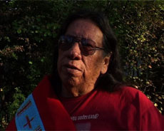

|
I'M A CROW - An Afternoon with Milo Yellow Hair
Simone Fürbringer | D 2009 | 70 Min.
Material : DV
Format: DigiBeta
Originalsprache: Englisch
Drehbuch: Simone Fürbringer, Nicolas Humbert
Kamera: Nicolas Humbert
Ton: Nicolas Humbert
Schnitt: Simone Fürbringer
Mit Milo Yellow Hair
Produktion: SimNic Films
Vertrieb: SimNic Films
Weltpremiere
Ein Nachmittag. Elf Fragen. Ein Film. Der Autor und Aktivist Milo Yellow Hair vom Stamm der Oglala Lakota ist eine der wichtigen intellektuellen Stimmen des indianischen Widerstands. 1950 geboren und aufgewachsen im Reservat Pine Ridge, widmet er sich seit seiner Studienzeit dem Überlebenskampf und dem Vermächtnis der indigenen Kulturen. Einen Nachmittag lang stellen wir ihm Fragen zum Thema 'Erinnerung und kulturelle Identität'. – Simone Fürbringer
Simone Fürbringer, geb. 1957 in Basel. Nach dem Studium der Pädagogik arbeitete sie als Lehrerin, freie Journalistin und Photographin. Ab 1987 Studium an der Filmhochschule München. Seit 1993 ist sie freie Filmemacherin. Sie lebt und arbeitet in München.
Filme: Flieg fliegender Fisch 1988 | Ong Dong Dreoka 1991 | Prends ta chance 1994 | Vagabonding Images 1998 | Farakan Heartbeat 2000 | Phönix aus der Asche 2002 | Lucie et maintenant 2007 | I'm a Crow - An Afternoon With Milo Yellow Hair 2009
zurück
|